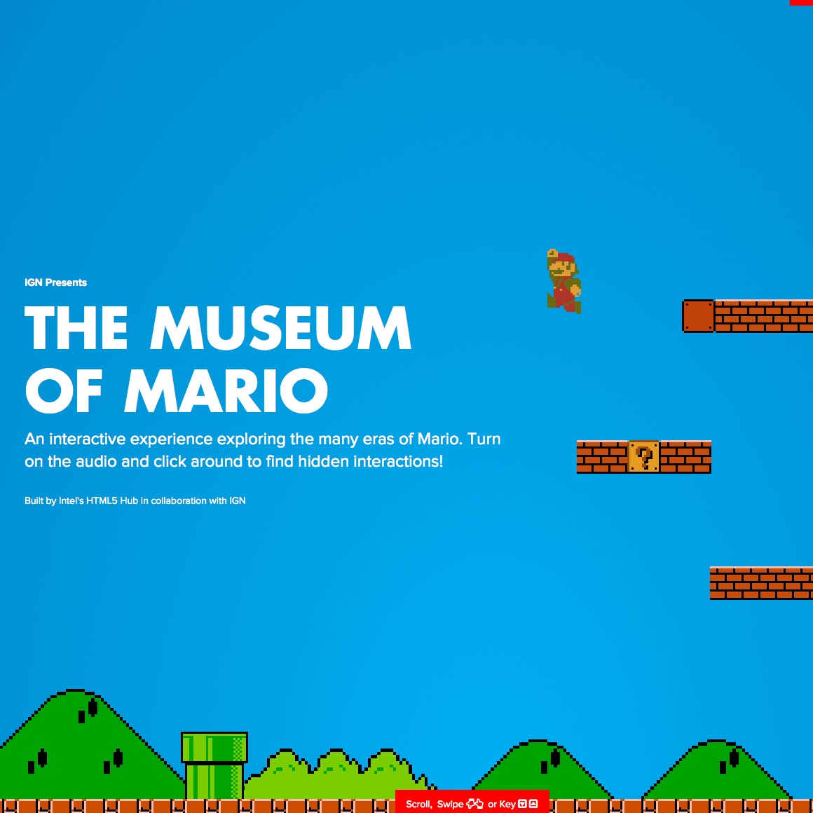

The Museum of Mario

Yet another item I forgot to link to a while ago. I enjoyed this trip down memory lane for the various version of Mario. Admittedly, the first Mario I beat was actually Super Mario Bros. 2 (which some would call an abomination), but the introduction of Toad into the family has changed things forever.
- Prior: Resilient Joy - My Journal System
- Next: Simpsons in CSS